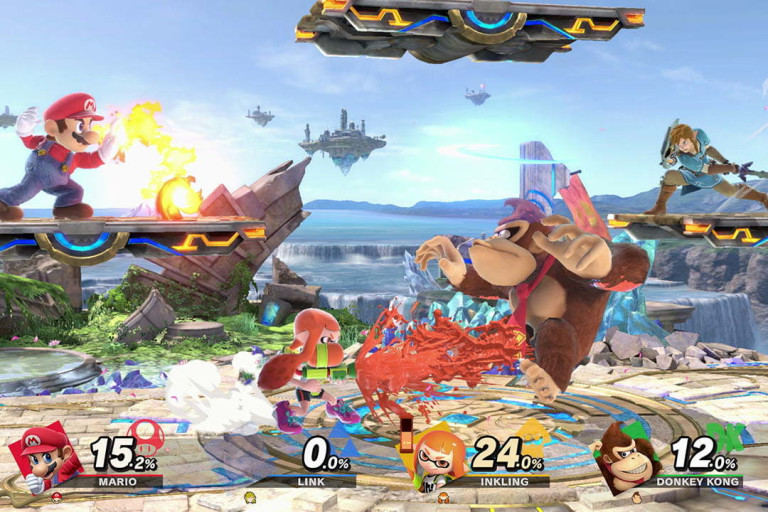
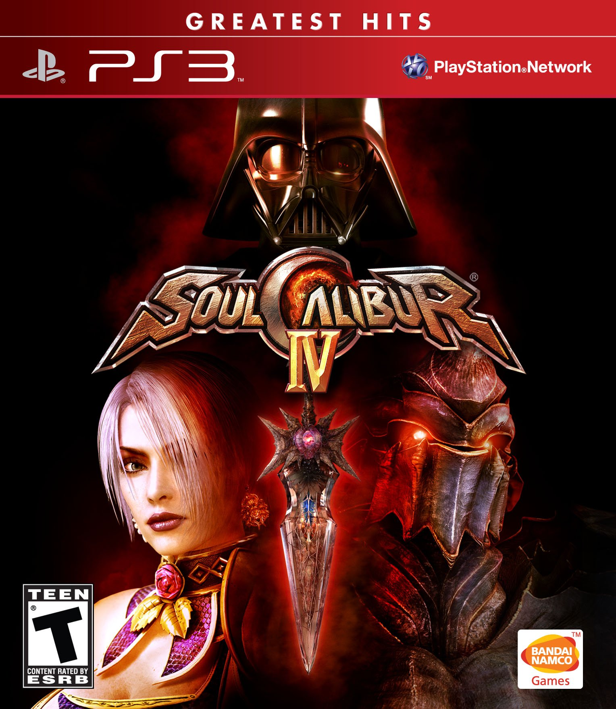
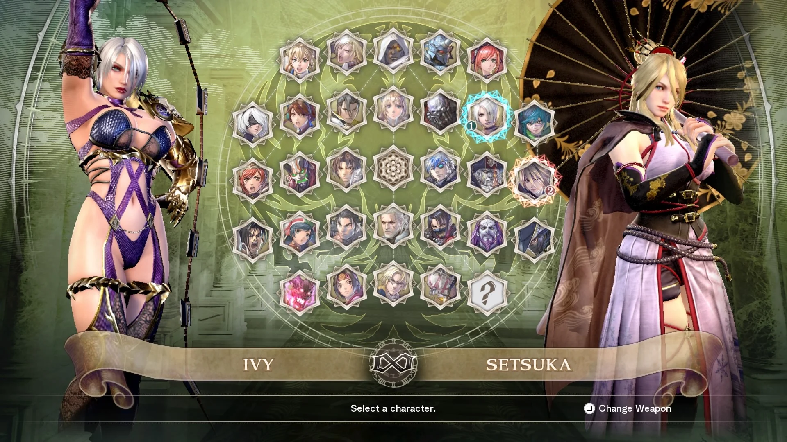
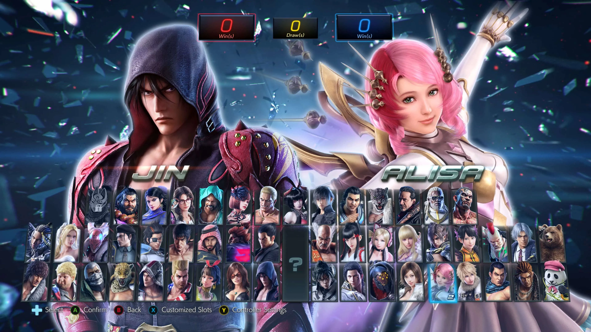

Jogos de luta (final) - 11/09/2024
Falta pouco, mas ainda temos alguns jogos pra cobrir
Super Smash Bros. Ultimate
Finalmente chegamos no Nintendo Switch, lembro dos primeiros leaks sobre um novo Smash, eu estava bem animado pra jogar
Eu ganhei esse jogo da minha vó, mãe do meu pai, no meu aniversário em 2019. Eu era muito fodido na época, então não consegui comprar o jogo assim que ele lançou - mas faço aniversário só três meses depois do lançamento, então não tive que esperar muito
Esse é o primeiro jogo dessa lista que eu tenho dados reais do quanto eu o joguei: 200 horas, segundo meu Switch
Não é uma quantidade mega impressionante, mas pros meus padrões, e levando em consideração que quase não joguei online, é um dos jogos de luta que mais joguei
Quando eu ganhei o jogo, imediatamente foquei na campanha, aliás, fiquei surpreso com a duração da campanha. Sempre que eu achava que ia acabar, abria uma nova área e continuava, hahah
Mas também joguei muito o modo clássico, o qual você luta com uma série de inimigos e termina batendo no Master Hand
Eu devo ter zerado esse modo ao menos uma vez com cada personagem do roster, eu realmente gostava
Meu main, novamente, era o Link. Joguei inúmeras vezes o classic mode com ele
Além disso, eu joguei muito com meu amigo João
Ele nunca tinha jogado nenhum Smash. Ensinei ele na porrada, e com o tempo, ele acabou ficando melhor que eu
Acho que metade dessas horas que tenho no jogo, passei lutando com ele. Provavelmente ficamos um ano jogando sempre que estávamos juntos (um final de semana ou outro, visto que agora eu já era adulto 😞)


Nesse ponto do tempo eu ainda não via Smash como um jogo de luta. Se você me perguntasse sobre jogos de luta, eu ia falar que tinha jogado basicamente só Mortal Kombat e Dragon ball 😅
E sobre o modo online que comentei - esse jogo tem uma conexão horrível. O pior netcode que já vi num jogo de luta, especialmente feio vindo de uma empresa grande como a Nintendo
No começo eu nem sequer tinha o adaptador de LAN do Switch, o que piorava ainda mais a situação
Isso, mais o fato de eu considerar esse jogo "party", fez eu nunca tentar levar ele a sério, realmente ficar bom
Hoje eu tenho vontade, mas sinceramente, com esse netcode fica difícil. Espero que o próximo Smash tenha Rollback Netcode
Soul Calibur (4 e 6)
Já que não joguei muito nenhum, vou falar dos dois juntos. Eu conheci Soul Calibur lá no PS3, lembro de jogar bastante com meu padrinho (O mesmo do budokai! Ele é um mega fã da FGC)
Achei o jogo muito bom, foi minha primeira experiência com combate em 3D - sem contar os Dragon Ball claro, que sinceramente são uma coisa própria
Mas eu não joguei muito, acho que por falta de conteúdo single player. Era mais ficar só lutando - eu nem considerava jogar online (nem sei que ano foi isso, mas suponho que o jogo já devia ser velho quando joguei, visto que ele lançou em 2008)
Também não tinha gente pra jogar comigo sempre, então ficar jogando o modo história dos persoangens eventualmente me cansou
Gostava de jogar com o Nightmare, eu achava o design dele sensacional. Hoje acho um pouco over-the-top, mas ainda é muito foda, vai
Recentemente joguei o 6 e senti a mesma mágica, tenho certeza que se pegar um desses no lançamento vai ser meu jogo. Nessa altura do campeonato, o 6 também já é antigo - o jogo já tem 6 anos
Segundo os números da Steam, tem um total de... 304 jogares ativos no momento. Pra comparação, Street Fighter 6 está com 7.147
Então também não me animo muito em pegar pra aprender de verdade agora
Por isso sigo esperando por um 7. Não tenho dúvidas de que virá eventualmente, e com a engine do Tekken 8, vai ser incrível
(Espero só que não seja censurado como os Mortal Kombat modernos 😳 Quero jogar de Ivy hein!)


Achava muito legal que o Soul Calibur 4 tinha o Darth Vader, joguei bastante com ele também, já que gostava dos filmes
Acho que foi minha primeira exposição a personagens convidados em jogos de luta (e não, nunca considerei os personagens do Smash como convidados. O DNA jogo é sobre crossovers)
Tekken 7
Eu nunca tinha jogado Tekken - e comecei bem tarde. Quando comprei o Tekken 7, ele já estava praticamente morto
Tanto que um mês depois de ter comprado, o 8 foi anunciado 😄
Quem me apresentou o jogo foi o meu amigo João, o mesmo do Smash. Ele gostava de Tekken desde o PS2
Sinceramente, eu não joguei muito. Zerei a campanha (muito boa aliás) com a Carol, minha noiva
A campanha do 7 tem o Akuma, e não só como personagem convidado, ele é canônico no universo do Tekken! Hahahah
O Akuma lutando contra o Heihachi durante a campanha foi ótimo
Depois disso, eu cheguei a jogar um pouco online. Eu treinei um pouco com o Kazuya, o personagem que seria meu main se eu tivesse ido mais longe
Mas o fato da atividade online estar meio baixa, e eu ainda não sentir muita confiança pra jogar online fizeram eu desistir rápido


Não devo ter jogado Tekken 7 mais de 40 horas, mas ele deixou uma marquinha no meu coração, certamente
Jogar com meus amigos, zerar a campanha com a Carol e aprender uns combos do Kazuya fizeram a experiência ser memorável
Conclusão
Fora esses, tenho certeza que joguei mais alguns jogos, mas não o suficiente pra eu me lembrar/considerar o suficiente pra colocar aqui
De cabeça, outros que tentei pelo menos menos uma vez são: MultiVersus, Nickelodeon All-Star Brawl 1 & 2, Dragon Ball Z: Budokai Tenkaichi 2, Melty Blood, Blazblue, Street Fighter 2, Power Rangers: Battle for the Grid, Guilty Gear Strive, DOA 5, Xenoverse 1 & 2, Dragon Ball FighterZ, Marvel vs Capcom 2 & 3, Virtua Fighter 5... E provavelmente outros que estou esquecendo
Desses aí, Guilty Gear é um que tem bastante potencial, eu joguei um pouco no Xbox Game Pass, mas agora ele está de saída. Tá na minha Wishlist da Steam. Um dia desses eu pego
Meu único receio é ter chego muito tarde pra festa e já não ter mais muita gente online (note como isso foi um problema recorrente na minha história com jogos de luta)
Também tenho interesse no Tekken 8, é um que provavelmente vou comprar no futuro
DOA estou esperando sair um 7, aí quem sabe 😉 Último foi de 2019
Por fim, Fatal Fury: City of the Wolves está pra lançar no começo do ano que vem e estou animado pra tentar 😈 Espero que seja bom
...
E Street Fighter? Pois, eu venho jogando muito o Street Fighter 6
Nessa lista, seria o jogo mais atual, e foi a minha inspiração pra escrever essas posts todos
Esse jogo me fez perceber o quão legal é a FGC, e me deu vontade real de participar em torneios locais
Estou treinando pra pegar Master com Ken
Vou falar mais em detalhes sobre ele num outro post, já que é um jogo mais especial (e atual!)
Até lá 👋
Parte 3